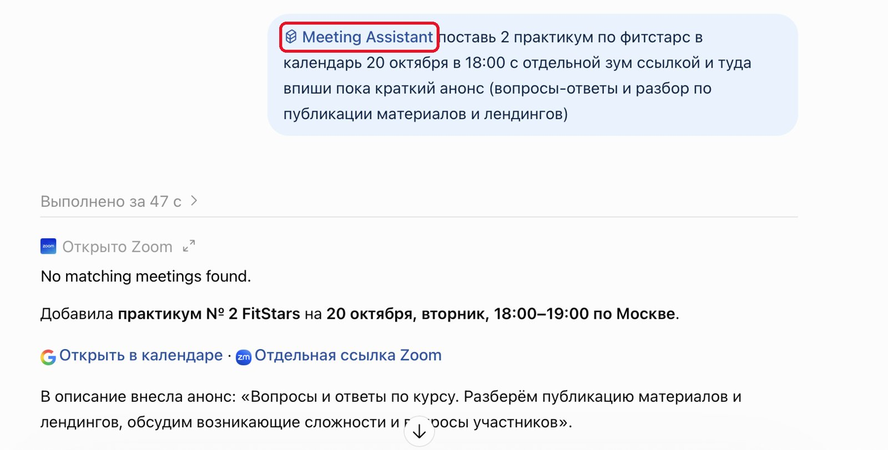

Что это за материал
В уроке 3 модуля 2 прозвучало, что плагины – непаханое поле: можно ставить график контента в Google Календарь или сохранять материалы в Google Диск. Здесь – обзор и выбор: что бывает, что подключить первым и как проверить, что подключение работает.
Глубокая работа с документами – что копировать из чата, что сохранять на Диск, как вести материалы – будет в модуле 3. Здесь мы только прокладываем провода.
Всё сверено с интерфейсом ChatGPT, справкой OpenAI и каталогом плагинов на 3 октября 2026 года. Названия меняются часто: то, что раньше звалось «коннекторами» и «приложениями», сейчас в ChatGPT собрано в разделе «Плагины».
Бытовыми словами
Плагин – это провод к вашим сервисам
Без плагина помощник сидит в чате и ждёт, пока вы принесёте ему файл, скопируете письмо или продиктуете расписание. С плагином он сам идёт в ваш Google Диск, находит нужный документ, смотрит календарь на неделю или готовит черновик ответа в почте. Вы не носите материалы туда-сюда – вы просто ставите задачу.
Если вспомнить картинку из урока 3: проект – это стол, за которым работает помощник, навыки – инструменты, которые он берёт со стола под задачу. Плагины – провода от этого стола к вашим папкам, календарю и почте.
В ChatGPT слово «плагин» шире, чем просто провод. Плагин может включать само подключение к сервису и готовые навыки к нему. Например, плагин Google Drive умеет работать сразу с Диском, Документами, Таблицами и Презентациями.
По шагам
Как подключить плагин в ChatGPT
Скриншоты сделаны 3 октября 2026 года, интерфейс на русском. Порядок одинаковый для любого плагина – здесь показан Zoom, Google Диск и Календарь подключаются так же.
Куда нажимать – обведено красным. Нажмите на картинку, чтобы рассмотреть её крупнее.
Откройте раздел «Плагины»
Он есть в меню слева. Ещё одна кнопка «Плагины» – под строкой ввода, рядом с «Выбрать проект» и «Файлы»: через неё плагин можно позвать прямо в чат.

Посмотрите, что уже подключено
Вверху – поиск «Искать плагины», ниже блок «Установленные» и каталог. Google Drive подписан «Drive, Docs, Sheets or Slides»: Документы, Таблицы и Презентации входят в него. Вкладка «Навыки» рядом – там живут навыки из уроков 2 и 3.

Кнопка «Добавить» – для тех, кто собирает своё
В ней «Создать плагин», «Загрузить архив плагина» и «Создать пользовательский сервер MCP». Это для продвинутых: чтобы подключить готовый плагин, она не нужна.

Найдите плагин и нажмите плюсик
Через поиск или по разделам каталога. Рядом с каждым плагином – плюсик, им плагин и добавляется. Нажмите на название, если хотите сначала прочитать, что он умеет.

Прочитайте окно подключения
ChatGPT покажет три блока: «Вы все контролируете», «Приложения могут представлять повышенный риск» и «Данные, переданные этому приложению». Дальше – кнопка «Перейти к» и название сервиса.

Прочитайте, к чему даёте доступ. Сервис получит доступ к основной информации о вас и краткой сводке того, над чем вы работаете в ChatGPT. Если сервис вам незнаком или не нужен каждую неделю – лучше не подключать.
Разрешите доступ на стороне сервиса
Откроется страница самого сервиса со списком: что ChatGPT сможет видеть и делать. У Zoom это создание и изменение встреч, просмотр облачных записей и поиск. Allow – разрешить, Decline – отказаться. Google покажет свой похожий экран.

Позовите плагин в чат
Наберите @ и выберите плагин из списка – или нажмите «Плагины» под строкой ввода. Можно и просто поставить задачу: установленный плагин ChatGPT подключит сам, если он подходит.

Совет
Подключили плагин – первым делом спросите: «Что ты умеешь делать?»
На скриншоте выше ChatGPT в ответ на такой вопрос разложил всё таблицей: создавать и менять встречи, находить записи, вытаскивать из расшифровки решения и задачи, сравнивать несколько встреч. За минуту вы узнаёте, чем плагин полезен именно вам, – без чтения справки. Можно попросить сразу и примеры под ваши задачи:
Первый вопрос новому плагину
@[название плагина] что ты умеешь делать? Ответь таблицей «Что могу / Пример запроса». Примеры бери из моей работы: [кто вы и чем занимаетесь, например: веду консультации и блог про питание]. Отдельно скажи, что ты можешь только смотреть, а что – создавать, менять или удалять.
Пример
Свой плагин: несколько подключений в одном
Плагин можно собрать и под себя. Удобство в том, что он объединяет несколько подключений и ваши правила в один инструмент: вы ставите задачу одной фразой, а он сам решает, в какой сервис за чем идти.
Вот мой личный плагин Meeting Assistant – он соединяет Zoom и Google Календарь. Я создала его прямо в чате: попросила ChatGPT создать плагин и описала, что он должен делать. Теперь одна просьба «поставь практикум 20 октября в 18:00 с отдельной ссылкой Zoom и впиши анонс» – и плагин сам создаёт встречу в Zoom, ставит событие в календарь и вписывает туда описание.

Плагин «Meeting Assistant» обведён красным: его зовут в чат так же, через @.
Сделать такой же можно двумя путями: попросить в чате, как я, или открыть «Плагины» → «Добавить» → «Создать плагин». Сначала подключите сервисы, которые он будет объединять, – например, Zoom и Календарь из шагов выше.
Попросите создать свой плагин
Создай мне плагин [название, например: Помощник по встречам]. Он объединяет подключения: [какие сервисы, например: Zoom и Google Календарь]. Что он делает: [задача, например: по моей просьбе создаёт встречу в Zoom, ставит событие в календарь и вписывает в описание анонс]. Мои правила: [например: время – по Москве, длительность по умолчанию – 1 час, ссылку Zoom всегда добавлять в событие]. Если чего-то не хватает, сначала задай мне 1–2 вопроса. Потом покажи, что получилось, и предложи проверить плагин на одной настоящей задаче.
Плагин в проекте
В чате проекта плагин зовут так же – через @ или «Плагины» под строкой ввода. А ссылку на файл или папку Google Диска можно добавить в источники проекта: тогда помощник будет опираться на неё.
Режим «Работа»
Для задач в несколько шагов – «найди в Диске, собери, перенеси в календарь» – переключитесь вверху с «Чата» на «Работу». Это режим для длинных задач: он работает с подключёнными плагинами и файлами, создаёт документы, таблицы и презентации. Доступен на части тарифов.
Тарифы и доступ
Каталог плагинов OpenAI открывает на всех тарифах, но конкретный плагин или действие может быть доступно только на части тарифов и не во всех странах. Из России ChatGPT официально недоступен – как подключаться, разобрано в гайде по доступу.
Подключаем первыми
Плагины для всех
Это то, что пригодится почти любому эксперту: файлы, расписание и почта. Все четыре – официальные плагины от OpenAI. После подключения запустите промпт-проверку: он покажет, что провод действительно работает, а не делает вид.
Google Диск
Помощник ищет файлы и папки в вашем Диске, читает их и опирается на них в ответах. По разрешению – создаёт, переносит и обновляет файлы. Видит всё, что открывается в подключённом аккаунте Google, – не больше и не меньше.
Что можно поручить
- «Найди в папке „Клиенты“ анкету [имя] и подготовь вопросы к первой консультации».
- «Собери из моих конспектов вебинаров за месяц список вопросов слушателей, которые остались без ответа».
- «Сохрани этот план постов в Диск документом в папку „Контент“».
Подключение: в каталоге ищите Google Drive. Если у вас несколько аккаунтов Google, подключайте тот, где лежат рабочие файлы: ChatGPT позволяет подключить и второй.
Проверка · Google Диск
Проверь подключение к Google Диску. Найди в моём Диске папку [название] и перечисли 3–5 последних файлов в ней с датами изменения. Потом открой файл [название] и перескажи его первый абзац своими словами. Ничего не создавай и не меняй. Если файл нашёлся, но содержимое прочитать не получилось, – так и скажи, не додумывай. Если доступа нет совсем – подскажи, что мне проверить.
Google Документы, Таблицы и Презентации
Отдельно их ставить не нужно: они работают через тот же плагин Google Drive. Помощник читает документ, сравнивает таблицы, а с разрешением – создаёт и дополняет файлы. Сложное редактирование и совместная работа по-прежнему удобнее в самих Google Документах.
Что можно поручить
- «Перепиши описание программы по моему документу „Голос бренда“ – факты не меняй».
- «Сравни две таблицы учёта заявок за август и сентябрь: что выросло, что просело».
- «Допиши в документ „Задачи после встречи“ пункты из нашей переписки».
Подключение: то же, что у Google Диска. При входе Google спросит разрешения на Документы, Таблицы и Презентации – прочитайте список.
Проверка · Документы и Таблицы
Проверь, как ты работаешь с моими Google Документами и Таблицами. 1. Найди в Google Диске документ [название] и перескажи его в 5 пунктах. 2. Найди таблицу [название]: какие в ней столбцы и примерно сколько строк. 3. Предложи создать новый Google Документ «Проверка помощника» с одной строкой: «Подключение работает». Создай его только после моего «да» и дай ссылку. Если какой-то шаг не получился – скажи, какой и почему, ничего не додумывай.
Google Календарь
Помощник видит ваше расписание, собирает план дня, ищет свободные окна, а с разрешением – создаёт, переносит и удаляет события. Именно так можно поставить график выхода контента прямо в календарь.
Что можно поручить
- «Посмотри мою неделю и предложи, куда поставить три часа на запись уроков».
- «Разнеси по календарю план постов на октябрь: каждый пост – событие на 30 минут в 10:00».
- «Что у меня завтра? Подготовь короткую памятку к каждой встрече».
Подключение: в каталоге ищите Google Calendar.
Проверка · Google Календарь
Проверь подключение к Google Календарю. Перечисли мои события на [завтра / эту неделю] со временем. Найди одно свободное окно на 60 минут в рабочее время. Потом предложи создать тестовое событие «Проверка помощника» на [дата и время]. Создавай только после моего «да» и сразу скажи, как его удалить. Если доступа к календарю нет – так и скажи, не придумывай события.
Gmail – если почта у вас там
Помощник пересказывает переписку, находит нужные письма, готовит черновики ответов и помогает разобрать входящие. Подключайте, если почта – ваш главный канал с клиентами.
Что можно поручить
- «Перескажи переписку с [имя]: о чём договорились и что мне нужно прислать».
- «Подготовь черновик вежливого ответа на последнее письмо от [имя] – не отправляй».
- «Найди письма с оплатами за сентябрь и сведи в список: от кого, сумма, дата».
Подключение: в каталоге ищите Gmail. Почта – самое чувствительное подключение: здесь особенно важно, чтобы ChatGPT спрашивал вас перед каждым действием (об этом – в главе про безопасность).
Проверка · Gmail
Проверь подключение к Gmail. Найди 3 последних письма от [имя или адрес] и коротко перескажи каждое: о чём и чего от меня ждут. Подготовь черновик ответа на последнее письмо. Ничего не отправляй и не удаляй – только покажи текст черновика здесь. Если доступа к почте нет – подскажи, что мне проверить.
Под ваши задачи
Специальные плагины
Их подключают не все, а те, кто уже живёт в этих сервисах. Ниже – подборка из официального каталога ChatGPT на 3 октября 2026 года. Правило простое: если сервисом вы не пользуетесь каждую неделю, плагин к нему не нужен.
У каждого плагина свои условия: почти всегда нужен аккаунт в самом сервисе, а часть возможностей зависит от тарифа ChatGPT и тарифа сервиса. Точно – на странице плагина в каталоге.
Дизайн и контент
Canva
Делает из брифа или текста посты, презентации, листовки; правит дизайн, убирает фон, переводит макет в размеры для соцсетей.
Нужен аккаунт Canva
Figma
Создаёт макеты, схемы и презентации в Figma по вашему описанию или документу.
Нужен аккаунт Figma
Metricool
Показывает статистику соцсетей, запланированные посты и удачное время публикации, создаёт и обновляет посты.
Нужен аккаунт Metricool
Заметки и база знаний
Notion
Ищет по вашим страницам и базам, создаёт страницы, задачи и базы данных – удобно, если вся методичка живёт в Notion.
Нужен аккаунт Notion
Trello
Работает с вашими досками и карточками задач: видно, что в работе, что зависло.
Нужен аккаунт Trello
Общение и встречи
Zoom
Находит встречи и облачные записи, пересказывает их, вытаскивает решения и задачи, создаёт и меняет встречи.
Нужен аккаунт Zoom
Slack
Пересказывает каналы за неделю, ищет сообщения, готовит ответы в тоне канала.
Нужен аккаунт Slack
Outlook Email и Outlook Calendar
То же, что Gmail и Google Календарь, – для тех, у кого почта и расписание в Microsoft.
Нужна учётная запись Microsoft
Файлы и облака
Dropbox
Находит и открывает файлы, сохраняет в Dropbox то, что сделано в чате, создаёт ссылку для отправки.
Нужен аккаунт Dropbox
Box
Ищет и читает файлы из Box – для тех, у кого рабочее хранилище там.
Нужен аккаунт Box
Продажи и клиенты
HubSpot
Работает с базой клиентов: сделки, контакты, задачи, отчёты по воронке, подготовка к встрече с клиентом.
Нужен аккаунт HubSpot
Typeform
Создаёт анкеты и формы обратной связи, разбирает ответы и показывает, что улучшить.
Нужен аккаунт Typeform
Список не полный: в каталоге сотни плагинов, и он постоянно меняется. Сторонние плагины от незнакомых разработчиков подключайте с особой осторожностью.
Без сюрпризов
Безопасность: провод работает в обе стороны
Подключая сервис, вы пускаете помощника в свои данные, а сервис – к части контекста из ChatGPT. Поэтому несколько правил:
- Подключайте только то, чем пользуетесь. Один-три плагина под реальные задачи лучше, чем десять «на всякий случай».
- Помните, что видит плагин. Google Диск открывает помощнику всё, что видит подключённый аккаунт, а не одну папку. Пропишите в инструкции, в какой папке работать, а личное и чувствительное держите в другом аккаунте.
- Начинайте с подтверждений. В «Настройках» в разделе «Плагины» есть «Разрешения»: «Всегда спрашивать», «Разрешить действия чтения», «Разрешить действия с низким риском», «Разрешить все действия». Для начала выберите первый или второй вариант – тогда ничего не уйдёт и не удалится без вашего «да».
- Отключайте ненужное. Там же, в «Плагинах», выберите сервис и отключите его. Учтите: отключение не удаляет старые чаты и то, что ChatGPT уже запомнил, – их проверьте отдельно.
- Рабочие аккаунты – только с разрешения работодателя. Корпоративная почта, диск и CRM – не ваша личная территория, даже если доступ у вас есть.
- Чужие персональные данные – с осторожностью. Анкеты клиентов, медицинские сведения, паспортные данные – не повод подключать всё подряд. Подумайте, нужно ли помощнику видеть именно это.
Подробнее о том, что можно и чего не стоит доверять нейросетям, – в гайде по безопасности.
Главный промпт
Какой плагин поможет именно вашему помощнику
Откройте чат в проекте своего помощника и вставьте промпт. Помощник посмотрит на свою инструкцию и задачи, задаст несколько вопросов и предложит не больше трёх подключений – с объяснением, зачем каждое.
Помощнику · выбор плагинов
Помоги понять, какие плагины – подключения к моим сервисам – тебе реально пригодятся. 1. Посмотри на свою инструкцию и материалы проекта: какие задачи ты для меня делаешь. Если инструкции не видишь – попроси меня её вставить. 2. Задай мне три вопроса одним сообщением, с вариантами ответа: – с какими сервисами я работаю каждый день (почта, календарь, облачный диск, заметки, дизайн, соцсети, база клиентов); – где лежат мои рабочие файлы; – что я до сих пор делаю руками: переношу из чата в документы, ищу файлы, вбиваю встречи в календарь, пересылаю письма. 3. По моим ответам предложи от одного до трёх подключений, не больше. Для каждого напиши: – зачем оно тебе в моих задачах – 2–3 примера; – что это подключение будет видеть и что сможет менять; – с какого безопасного режима начать: только чтение или подтверждение каждого действия. 4. Если у тебя есть поиск в интернете, сверься с официальной справкой своей нейросети: есть ли такое подключение сейчас и на каком тарифе. Если поиска нет – так и скажи и пометь, что это нужно проверить мне. 5. Если подходящего подключения нет, предложи обходной путь: какой файл выгружать и загружать в проект и как часто его обновлять. 6. В конце дай готовый фрагмент для инструкции проекта: когда использовать каждое подключение, что можно делать без спроса, а что – только после моего подтверждения. Не придумывай подключения и названия кнопок. Если не уверен – пиши «проверить».
Чтобы было с чем сравнить, вот как может выглядеть фрагмент инструкции про подключения. Ваш будет другим – под ваши сервисы и задачи.
Пример · фрагмент инструкции про подключения
ПОДКЛЮЧЕНИЯ – Google Диск: рабочие материалы – в папке «[название]». Другие папки не открывай без моей просьбы. Готовые тексты сохраняй туда же, только после моего «да». – Google Календарь: смотреть расписание можно всегда. Создавать, переносить и удалять события – только после моего подтверждения. – Gmail: читать и готовить черновики – можно. Отправлять – никогда, отправляю только я. – Если подключение не отвечает или файла нет – скажи прямо, не выдумывай содержимое.
Готовый фрагмент лучше нести в Конструктор помощников – тот чат, где вы собирали помощника: пусть он аккуратно впишет его в инструкцию, не сломав то, что уже работает.
Обходной путь
Если плагина нет в вашей нейросети или на тарифе
Провод – удобство, а не обязательное условие. Без него помощник работает по старинке: вы выгружаете файл из сервиса и загружаете его в проект. Например, скачиваете таблицу заявок или документ с Яндекс Диска – и добавляете в материалы помощника. Раз в неделю или месяц обновляете.
Яндекс-сервисов в официальном каталоге плагинов ChatGPT на 3 октября 2026 года нет – мы проверили поиском по каталогу. Для Телеграма там встречаются только сторонние плагины от небольших разработчиков: подключать их ради удобства мы не советуем.
Помощнику · работа с выгрузкой
Плагина для [сервис] у меня нет. Я буду выгружать из него [что: таблицу заявок / список встреч / заметки] файлом и загружать в проект раз в [неделю / месяц]. Посмотри на прикреплённый файл: всё ли в нём понятно, каких данных не хватает для моих задач. Предложи, в каком виде мне удобнее выгружать, чтобы тебе было проще работать. Потом напиши строку для инструкции проекта: где лежит свежая выгрузка, какой она даты и что делать, если она устарела.
В Claude
Подключения называются коннекторами (Connectors): есть каталог, а среди официальных – Google Диск, Gmail и Google Календарь. Помощник, как и в ChatGPT, видит только то, что доступно вашему аккаунту в сервисе.
В Gemini
Это «Подключенные приложения»: Gmail, Google Календарь, Диск, Документы и другие сервисы Google. Позвать приложение в чат можно так же – через @.
В остальных нейросетях
Возможности меняются быстро. Спросите Гида по нейросети, есть ли в вашей нейросети подключения к сервисам и где они включаются. Если нет и проектов – соберите помощника по бонусу «Помощник там, где нет „Проектов“».
Второй путь – через браузер: нейросеть нажимает кнопки за вас
Даже если провода к сервису нет, нейросеть может сделать работу за вас – через браузер. Выглядит это как обычная работа на сайте: она сама открывает страницы, нажимает кнопки и заполняет поля, а вы в это время занимаетесь другой задачей. Так можно, например, разобрать почту в Яндексе – отметить важное, разложить рассылки по папкам, подготовить черновики ответов – или заполнить форму в Яндекс Формах по вашим данным. Это медленнее, чем плагин, зато работает с любым сайтом.
Где это есть (проверено 3 октября 2026): в ChatGPT – режим «Работа» (в программе для компьютера на всех тарифах, на сайте и в телефоне – с тарифа Plus); в Claude – расширение Claude in Chrome на платных тарифах; в Gemini – Gemini Spark на Google AI Pro и Ultra, не во всех странах. Как это называется у вас – смотрите в Навигаторе.
- Войдите в сервис сами. Откройте почту или форму в браузере под своим аккаунтом. Пароли нейросети не давайте.
- Опишите задачу целиком: что сделать, где, что считать готовым результатом.
- Попросите спрашивать перед необратимым: отправить письмо, удалить, оплатить, отправить форму – только после вашего «да».
- Занимайтесь своим, а в конце проверьте, что получилось.
Пример · разобрать почту в Яндексе
Открой мою Яндекс Почту – я уже вошёл(ла) в неё в браузере. Разбери входящие за последнюю неделю: отметь письма, где ждут моего ответа, перенеси рассылки в папку «Рассылки», для 3 самых важных писем подготовь черновики ответов, но не отправляй. Ничего не удаляй. Перед любым необратимым действием спроси меня. В конце пришли короткий отчёт: что сделано и что ждёт моего решения.
Пример · заполнить Яндекс Форму
Открой форму по ссылке: [ссылка]. Заполни её по моим данным: [данные или «возьми из прикреплённого файла»]. Если какого-то поля нет в данных – не придумывай, оставь пустым и скажи мне. Не нажимай «Отправить»: покажи, что получилось, и дождись моего подтверждения.
Что сохранить и что дальше
Сохраните в «Мои помощники», рядом с инструкцией вашего помощника, фрагмент про подключения: какие плагины стоят, что помощнику можно без спроса, а что – только с вашего «да».
Раз в месяц загляните в «Плагины»: всем ли подключённым вы пользуетесь? Лишнее – отключите. А в модуле 3 мы научим помощника по-настоящему работать с документами – провода к тому времени уже будут проложены.